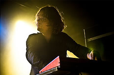
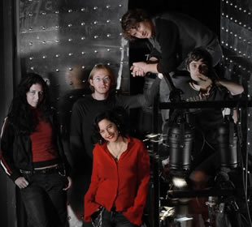

Entrevista do tecladista Frank Boeijen à Lizandra Pronin - Rock Online - Maio de 2003
Porque demorou tanto para lançarem o novo álbum? Desta vez precisávamos realmente de mais tempo para isso. No decorrer dos anos fomos descobrindo que as coisas boas tomam tempo. Primeiro escrevemos muitas canções e idéias nos ensaios e depois nós gravamos tudo em várias sessões de estúdio. Depois tivemos que trabalhar muito, editando no computador, no "homestudio" do nosso produtor. Antes que pudéssemos perceber, haviam se passado 2 anos...
Depois desse trabalho todo, como estão as vendas e a reação dos fãs? Estão indo muito bem. Embora as coisas não estejam muito bem para a indústria musical de um modo geral, nós não temos do que reclamar. As resenhas do álbum estão boas em todo o mundo, e eu acredito que muitos fãs apreciaram o novo álbum e a direção que nossa música está tomando.
Como foi trabalhar com o produtor Zlaya Hadzich e por que escolheram ele? Ele já era o engenheiro de som durante as gravações do If_then_else. Ele teve ótimas idéias e uma grande influência motivadora em todos nós. Então nem pensamos em outra pessoa, convidamos ele assim que terminados o If_then_else, para que fosse o produtor do próximo álbum.
Musicalmente, quais as diferenças que você apontaria entre o novo álbum, Souvenirs e If_then_else? Souvenirs é um álbum muito mais coerente e lógico do que o If_then_else. A atmosfera em Souvenirs é muito lúgubre e sombria. No If_then_else há canções mais sóbrias, mas há também coisas mais leves. Eu prefiro um álbum mais coerente, que siga uma linha. Isso torna a coisa toda mais clara.
Na época do lançamento de How To Measure A Planet, vocês inventaram o rótulo "trip-rock" para a música do Gathering. O que exatamente isso significa para vocês? Isso é válido para o novo álbum? Eu acho que o termo "trip-rock" é uma boa descrição. Nossa música tem muita influência de "trip-hop", e ainda mais pela atmosfera. Algumas passagens ainda trazem muitos elementos do rock, então a palavra rock também é valida.
Nos álbuns Mandylion e Nighttime Birds vocês usaram diversos riffs pesados de guitarra, mas no novo álbum nós não os ouvimos, por quê? Você não os ouviu? Bem, depende do seu ponto de vista e do que você está chamando de "riffs pesados". Eu acredito que as guitarras de Even the Spirits, Broken Galss e Monsters estão bem pesadas.
O single You Learn About It ganhou um videoclipe feito por um garoto de apenas 13 anos, chamado Tim Blok. Infelizmente ainda não vimos o vídeo. De quem foi a idéia de chamar um garoto fazer o vídeo? As crianças tem uma visão mais livre das coisas na vida. É a mesma coisa com a arte. O Tim é filho de um fotógrafo chamado Peter Blok. Ele fez diversas fotos para a banda. O filho vinha junto nos shows, tirou várias fotos e filmou trechos com sua própria câmera. Ele fez o vídeo no computador com o material que coletou.

Por que vocês deixaram a gravadora, a Century Media Records? O contrato terminou e nós achamos que seria mais inteligente lançar o novo álbum através da nossa própria gravadora, a Psychonaut Records.
E como é ter uma gravadora própria? Muito bom. É claro que temos muito mais liberdade agora e se as coisas dão errado nós só podemos culpar a nós mesmos, o que aliás é bom para nós. Nós gostamos de estar no controle de todas as coisas.
Há um DVD do Gathering do qual nós ouvimos falar, que foi lançado extra-oficialmente... O que vocês acham disso? Você está falando do "bootleg" (álbum ou DVD pirata) que foi gravado no México? Porque tem ainda um DVD lançado pela Century Media. A banda não tem participação nenhuma nesse lançamento. O DVD é ruim, e isso é uma pena pois poderia ser muito melhor, há muitas coisas que se pode fazer nesse formato. A Century Media fez um DVD pobre, na minha opinião. Quanto ao "bootleg" do show do México, eu não sei pois não o vi...
Como está a atual turnê? Quando vocês virão ao Brasil? A turnê está indo muito bem, há uma ótima vibração em nossos shows. Fizemos 4 semanas de shows na Europa no mês passado e agora estamos fazendo shows na Holanda. Em junho e julho estaremos nos apresentando no leste europeu e no Reino Unido. Faremos alguns festivais nesse verão. Esperamos ir para a América do Sul em breve. Se houver um produtor interessado em nos levar até aí nós iremos imediatamente!
Para terminar, podeira deixar algum recado para os leitores do Rock Online? Divirtam-se... sempre! Na verdade isso é uma fala do tecladista do Spinal Tap! [N.T.: No original, Have a good time... all the time, do filme Spinal Tap]
Extraída de http://territorio.terra.com.br/rockonline
|